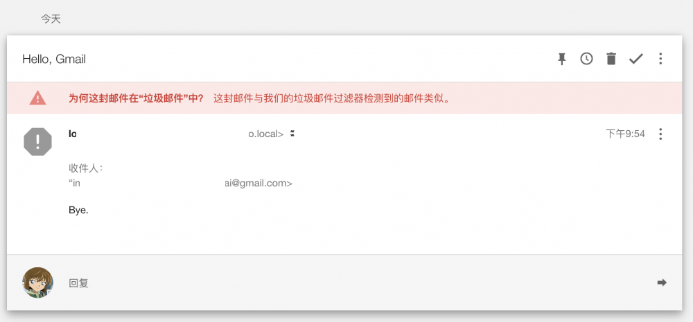
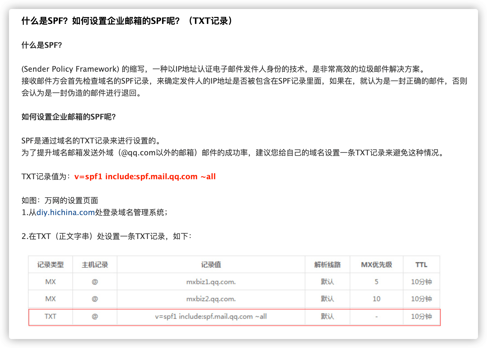
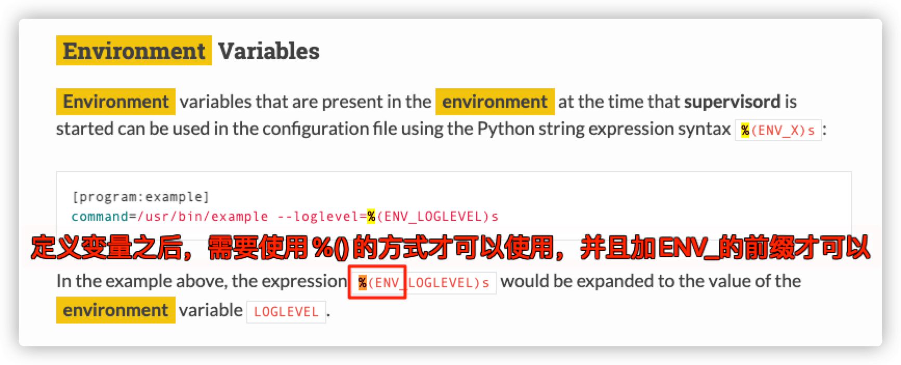
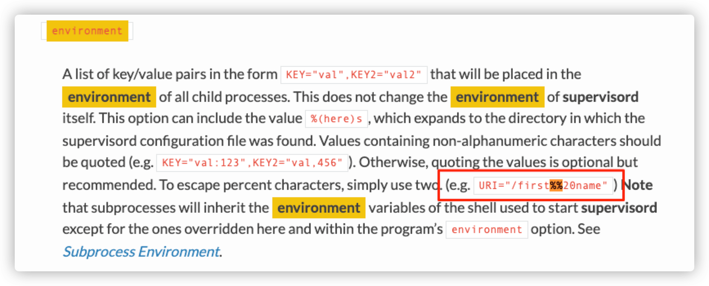
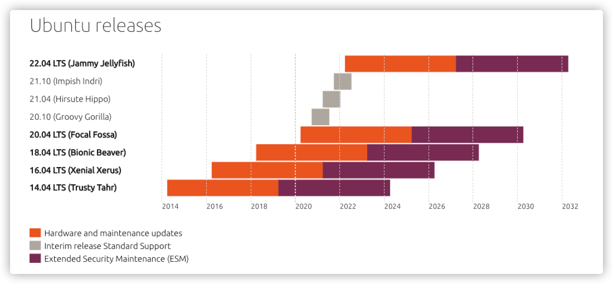
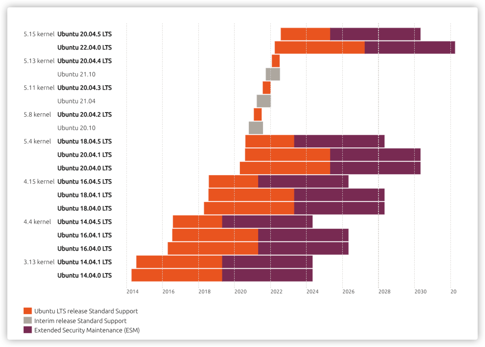
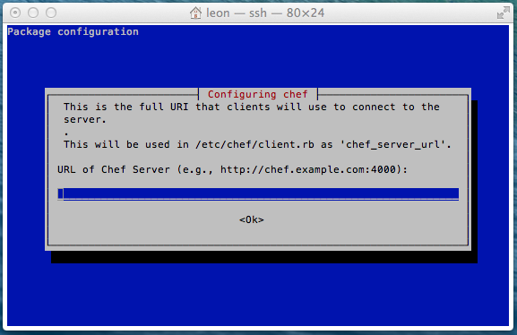

这里主要记录在日常使用 Linux 时，遇到的一些零碎问题。不易写成独立文章，所以统一记录于此。
1. 机器宕机问题排除思路
简单记录一下系统宕机之后，主要排除思路和纪要！
- [1] 服务器资源不足导致
- 是否内存(
OOM)/CPU/磁盘爆满导致服务器重启 - 排除系统日志
/var/log/messages、/var/log/dmesg
- 是否内存(
# 系统信息
服务器类型: cat /etc/redhat-release
操作系统版本: cat /etc/issue
内核版本: uname -a
Docker版本: docker --version
# 主要排除日志
/var/log/messages (系统启动后的信息和错误日志)
/var/log/dmesg (系统日志守护进程的日志文件)
/var/log/boot.log (守护进程启动和停止相关的日志消息)
/var/log/kern.log (发行版中的日志文件)
# 次要排除日志
/var/log/secure (与安全相关的日志信息)
/var/log/cron (与定时任务相关的日志信息)
/var/log/maillog (与邮件任务相关的日志信息)
/var/log/spooler (与UUCP和news设备相关的日志信息)
# 用户登录日志
/var/log/wtmp (永久记录每个用户登录/注销及系统的启动/停机的事件)
/var/run/utmp (记录当前正在登录系统的用户信息)
/var/log/btmp (记录失败的登录尝试信息)
- [2] 服务器硬件问题导致
- 是否因为系统硬件原因导致服务器重启
- 查看是否有硬件告警并收集硬件信息，报告厂商协助排查
# 基本信息收集
$ uptime (查看系统运行时间/用户数/负载)
$ last (查看最近系统重启的信息)
$ df -h (查看各分区使用情况)
$ free -m (查看内存使用量和交换区使用量)
$ nvidia-smi (查看驱动版本/硬件等相关信息)
- [3] 触发服务器系统 Bug 导致
- 是否触发系统
Bug并生成dump文件 - 检查是否是系统内核
Bug导致，所以得看kdump在系统崩溃保留的信息
- 是否触发系统
# 查看kdump日志(发生故障)
/var/crash/生产一个主机+故障时间目录
产生两个vmcore和vmcore-dmesg.txt文件
2. RPO 和 RTO 的区别
故障发生时，需要了解两个指标！
- RPO
Recovery Point Objective- 数据恢复点目标
- 主要指的是业务系统所能容忍的数据丢失量
- RTO
Recovery Time Objective- 恢复时间目标
- 从灾难发生到业务系统恢复服务功能所需要的最短时间周期
3. 普通用户执行特权指令
还是应该回顾下，之前掌握的基础知识！
- [问题起因] 自己在测试机器上面新建了一个普通用户，当我后续使用的时候，发现竟然可以执行
newgrp命令。按照常理来说，执行newgrp命令的话是需要输入密码才对的。
➜ ls -lh /usr/bin/newgrp
-rwsr-xr-x 1 root root 40K Aug 21 2019 /usr/bin/newgrp
- [解决方法] 最终发现，是因为该用户在
/etc/passwd和/etc/group文件中的权限不一致导致的(有可能是人为直接修改了配置文件导致的)，即虽然该用户没有特权权限，但是其对应组是可以执行特权命令的。所以后续管理用户需要使用命令进行操作，并且需要对用户和组进行监控和告警，放置后续问题的出现。pwck=> 用来验证系统认证文件/etc/passwd和/etc/shadow的内容和格式的完整性grpck=> 用于验证组文件/etc/group和/etc/gshadow的完整性
# 用来验证系统认证文件内容和格式的完整性
# -q: 仅报告错误信息
# -s: 以用户id排序文件
# -r: 只读方式运行指令
$ sudo pwck -q [/etc/passwd /etc/shadow]
# 用于验证组文件的完整性
# -s: 以用户id排序文件
# -r: 只读方式运行指令
$ sudo grpck -q [/etc/group /etc/gshadow]
Linux系统里的用户和群组密码，分别存放在/etc/passwd和/etc/group文件中。因系统运作所需，任何人都得以读取它们，造成安全上的破绽。投影密码将文件内的密码改存在/etc/shadow和/etc/gshadow文件内，只允许系统管理者读取，同时把原密码置换为x字符，只需执行grpconv就能开启群组投影密码。
# 默认系统都是开启的状态
$ sudo grpconv
4. 邮件被识别为垃圾邮件
此邮件类似于我们的垃圾邮件过滤器检测到的邮件
- [问题起因] 使用其他外域邮箱给特定域名邮箱发送邮件，会概率性被拒收或者收进垃圾箱的情况。

- [解决方法] 查了下，发现官方建议需要进行
SPF设置，将对于的域名加到DNS TXT解析里面，以下是QQ邮箱给出的示例，可以根据实际情况调整不同的域名信息。

- 配置上之后可以通过如下命令进行检测是否已经添加成功了，如果还是有问题的话，可以排除下是否是因为有
QoS策略导致的，比如会检测和过滤有些关键字等。
# 检测是否添加成功
$ dig @8.8.8.8 -t TXT escapelife.site
; <<>> DiG 9.10.6 <<>> @8.8.8.8 -t TXT escapelife.site
; (1 server found)
;; global options: +cmd
;; Got answer:
;; ->>HEADER<<- opcode: QUERY, status: NOERROR, id: 1752
;; flags: qr rd ra; QUERY: 1, ANSWER: 0, AUTHORITY: 1, ADDITIONAL: 1
;; OPT PSEUDOSECTION:
; EDNS: version: 0, flags:; udp: 512
;; QUESTION SECTION:
;escapelife.site. IN TXT
;; ANSWER SECTION:
;escapelife.site. 600 IN TXT "v=spf1 include:spf.mail.qq.com ~all"
;; Query time: 62 msec
;; SERVER: 8.8.8.8#53(8.8.8.8)
;; WHEN: Thu Mar 10 11:31:03 CST 2022
;; MSG SIZE rcvd: 109
5. 私有 CA 的创建流程
简单介绍私有 CA 证书以及签名的整体流程
为了 用 Nginx 在公网上搭建加密数据通道，首先可以使用 mTLS 技术进行双向的 TLS 验证，然后自己做 CA 给自己签发证书，然后搭建 Nginx 服务完成。
| 类型 | 名称 | 用途 |
|---|---|---|
| CA | ca.key |
CA 的私钥 |
| Server | ca.crt |
CA 的公钥(证书) |
| Server | server.key |
服务器端私钥 |
| Server | server.crt |
服务器端公钥 |
| Server | server.csr |
服务器端请求(部署不需要用到) |
| Client | client.key |
客户端的私钥 |
| Client | client.crt |
客户端的公钥 |
| Client | client.csr |
客户端的请求(部署不需要用到) |
- [1] 生成 CA 的私钥 Key - 妥善保管 - ca.key
- 对于 CA 的私钥 Key 最好给一个密码保护
- 每次使用这个 CA 签发证书的时候都需要输入密码
# genrsa: 生成RSA私钥
# -des3: 生成的Key使用des3进行加密；如果不加这个参数就不会提示让你输入密码
# 4096: 生成Key的长度；
$ sudo openssl genrsa -des3 -out ca.key 4096
Generating RSA private key, 4096 bit long modulus (2 primes)
.............................++++...............++++
e is 65537 (0x010001)
Enter pass phrase for ca.key:<passphrase>
Verifying - Enter pass phrase for ca.key:<passphrase>
- [2] 生成 CA 的公钥 Key - 证书 - ca.crt
- 会询问你一些信息，比如地区，组织名字之类的
# req: 创建证书请求
# -new: 产生新的证书
# -x509: 直接使用x509产生新的自签名证书
# -days 365: 证书1年之后过期，省略表示永不过期
# key: 创建公共证书的私钥，会被提示输入私钥的密码
# -out: 生成的证书
$ sudo openssl req -new -x509 -days 365 -key ca.key -out ca.crt
You are about to be asked to enter information that will be incorporated
into your certificate request.
What you are about to enter is what is called a Distinguished Name or a DN.
There are quite a few fields but you can leave some blank
For some fields there will be a default value,
If you enter '.', the field will be left blank.
-----
Country Name (2 letter code) [AU]:
State or Province Name (full name) [Some-State]:
Locality Name (eg, city) []:
Organization Name (eg, company) [Internet Widgits Pty Ltd]:CertAuth
Organizational Unit Name (eg, section) []:
Common Name (e.g. server FQDN or YOUR name) []:
Email Address []:
- [3] 申请服务器端证书 - server.csr
- 我们有了一对
CA证书，ca.key和ca.crt两个文件
- 我们有了一对
# 服务器端依旧创建一个私钥Key(不用保护了)
$ sudo openssl genrsa -out server.key 4096
# 不是直接生成证书，而是生成一个证书请求(这个.csr的文件就是请求签名)
# Organization Name: 不能和CA的一样
# Common Name: 必须要写一个，可以写一个不存在的域名，否则证书无法使用
$ sudo openssl req -new -key server.key -out server.csr
- [4] 服务器端证书签名 - server.crt
- 用我们的
CA给这个服务器端证书签名
- 用我们的
# x509: 公有证书的标准格式
# -CA: 使用CA对其签名
# -CAkey: CA的私钥key
# -set_serial 01: 签发的序列号，如果证书过期的话，可以直接用.csr修改序列号重新签一个，不需要重新生成.csr文件
$ sudo openssl x509 -req -in server.csr -CA ca.crt -CAkey ca.key -set_serial 01 -out server.crt
- [5] 验证生成的证书
- 可以使用这条命令验证生成的证书是正常
- 重复此流程再签发一个
client端的证书
# 如下输入即可
$ sudo openssl verify -verbose -CAfile ca.crt server.crt
server.crt: OK
- [5] 配置 Nginx 服务
ssl_certificate: 告诉Nginx使用哪一个公有证书ssl_certificate_key: 此证书对用的私钥是什么，服务器需要有私钥才能工作ssl_verify_client: 需要验证客户端的证书ssl_client_certificate: 我们信任这个CA所签发的所有证书
# 使用自签证书 - Server端
server {
listen 443 default_server ssl;
listen [::]:443 default_server ssl;
server_name _;
ssl_certificate /data/cert/server.crt;
ssl_certificate_key /data/cert/server.key;
ssl_verify_client on;
ssl_client_certificate /data/cert/ca.crt;
location / {
proxy_pass http://127.0.0.1:8000;
}
}
# 使用自签证书 - Client端
upstream remote{
server 127.0.0.1:443;
}
server {
listen 80 default_server;
listen [::]:80 default_server;
server_name _;
location / {
proxy_pass https://remote;
proxy_ssl_trusted_certificate /home/vagrant/cert/ca.crt;
proxy_ssl_verify on;
proxy_ssl_server_name on;
proxy_ssl_name proxy.example.com;
proxy_ssl_certificate /home/vagrant/crt/client.crt;
proxy_ssl_certificate_key /home/vagrant/cert/client.key;
}
}
6. 在 Supervisor 中用符号
在 Supervisor 工具中添加环境变量如果存在百分比(%)的话，需要进行特殊的方式转义！
- [问题起因] 在使用
Supervisor工具部署服务的时候，给某个服务添加环境变量的之后，update发现服务直接异常了。然后把某个环境变量删除掉之后，就正常了，挺奇怪的。
yaml.scanner.ScannerError: mapping values are not allowed here
in "<unicode string>", line 1, column 64:
... id={'process_num': 0, 'ENV_PATH': '/usr/local/sbin:/usr/local/bi ...
^
- [解决方法] 查了下，发现之前看到过这个内容，只不过是后续时间长了给忘记了，使用
%号的话需要使用%%转义一下，才可以。


7. Ubuntu 发行版的支持时间
这里就是单纯记录下对应版本的官方支持时间，方便后续自己查看！


8. Linux 系统启动性能分析
分析系统性能，发现并解决引起性能不佳、启动时间长的问题
Linux 启动过程是值得学习关注的地方，因为 systemd-analyze 工具很多功能聚焦在启动 startup 过程。但是首先，要理解引导 boot 和启动 startup。引导阶段从 BIOS 加电自检（POST）开始，结束于内核完成加载并控制主机系统，然后是开始了启动过程，也是 systemd 日志的开始点。
- [1] 启动的几个主要部分耗费的时间
- 防火墙(
BIOS)、内核启动、装载运行(initrd)、用户空间
- 防火墙(
$ systemd-analyze
Startup finished in 7.038s (firmware) + 32.527s (loader) + 2.323s (kernel) + 22.704s (userspace) = 1min 4.594s
graphical.target reached after 22.695s in userspace
- [2] 哪个 systemd 单元的初始化时间最长
- 果按照初始化时间长短排序，从多到少
$ systemd-analyze blame
1min 26.562s fstrim.service
21.255s plymouth-quit-wait.service
4.325s NetworkManager-wait-online.service
838ms snapd.service
602ms apt-daily-upgrade.service
......
- [3] 启动过程中发生的时间关键的事件链
- 前面有
+的数字显示单元启动所需的时间 - 前面有
@的数字表示单元激活开始启动所使用的绝对秒数
- 前面有
$ systemd-analyze critical-chain
graphical.target @22.695s
└─multi-user.target @22.695s
└─plymouth-quit-wait.service @1.440s +21.255s
└─systemd-user-sessions.service @1.435s +2ms
└─network.target @1.432s
└─NetworkManager.service @1.309s +122ms
└─dbus.service @1.308s
......
- [4] 转储了当前系统状态的大量数据
- 有主要的启动时间戳
- 每个
systemd单元的列表，并对每个单元状态进行了完整描述
$ systemd-analyze dump
Timestamp firmware: 39.566011s
Timestamp loader: 32.527224s
Timestamp kernel: Fri 2022-04-08 15:07:47 CST
Timestamp userspace: Fri 2022-04-08 15:07:49 CST
Timestamp finish: Fri 2022-04-08 15:08:12 CST
Timestamp security-start: Fri 2022-04-08 15:07:49 CST
Timestamp security-finish: Fri 2022-04-08 15:07:49 CST
......
- [5] 生成一个矢量图文件显示在引导和启动过程发生的事件
- 时间轴上零点的左边是引导阶段，零点的右边是启动阶段
- 这一小部分显示了内核、
initrd和initrd启动的进程
# svg
$ systemd-analyze plot > /tmp/bootup.svg
# dot
$ time systemd-analyze dot | dot -Tsvg > /tmp/test.svg
- [6] 其他高级设置和操作
- 条件子命令
- 列出配置文件
- 单元文件检查
- 检查指定服务的安全级别
# 条件子命令
$ systemd-analyze condition \
'ConditionKernelVersion = ! <4.0' \
'ConditionKernelVersion = >=5.1' \
'ConditionACPower=|false' \
'ConditionArchitecture=|!arm' \
'AssertPathExists=/etc/os-release' ; \
echo $?
# 列出配置文件
$ systemd-analyze cat-config systemd/system/display-manager.service
$ systemctl cat backup*
# 单元文件检查
$ systemd-analyze verify /etc/systemd/system/backup.service
# 检查指定服务的安全级别
$ systemd-analyze security display-manager
9. 非交互下安装工具和软件
因为某些问题，我们不需要安装的时候遇到系统提示！
- [问题起因 一] 打包镜像的时候，安装工具绝大多数都是不应该需要人为参与的(妨碍自动化)，所以我们静默自动化安装。常常遇到问题是，安装时区、键盘布局等，需要我们选择时区和键盘布局。如下所示，是安装
chef工具提示的对话框。

- [解决方法 一] 可以通过 StackExchange 这解决方法，达到非交互安装。
# DEBIAN_FRONTEND
$ sudo DEBIAN_FRONTEND=noninteractive apt install -y -q chef
# DebConf
# 查出对应包的预配置项
$ sudo debconf-show chef
# 设置对应默认值
# 格式: {包名} {包名}/{配置项key} {配置项类型} {配置项value}
# 格式: package package/key {boolean,string} {true, some string}
$ echo "chef chef/chef_server_url string" | sudo debconf-set-selections
$ sudo apt-get install chef
# 查出对应包的预配置项
$ sudo debconf-show tzdata
* tzdata/Zones/Etc: UTC
tzdata/Zones/US:
tzdata/Zones/Asia:
tzdata/Zones/Africa:
tzdata/Zones/Pacific:
tzdata/Zones/America:
tzdata/Zones/Antarctica:
tzdata/Zones/Atlantic:
tzdata/Zones/Arctic:
tzdata/Zones/Indian:
tzdata/Zones/Australia:
* tzdata/Areas: Etc
tzdata/Zones/Europe:
# 设置对应默认值
$ echo "tzdata tzdata/Areas select Etc" | debconf-set-selections
$ echo "tzdata tzdata/Zones/Etc select UTC" | debconf-set-selections
$ sudo apt-get install -y tzdata
- [问题起因 二] 打包镜像的时候，容器里边
upgrade卡住的话，看了一下是否配置文件冲突导致的。如果是的话，可以这么处理一下。
Setting up sudo (1.8.16-0ubuntu1.5) ...
Configuration file '/etc/sudoers'
==> Modified (by you or by a script) since installation.
==> Package distributor has shipped an updated version.
What would you like to do about it ? Your options are:
Y or I : install the package maintainer's version
N or O : keep your currently-installed version
D : show the differences between the versions
Z : start a shell to examine the situation
The default action is to keep your current version.
*** sudoers (Y/I/N/O/D/Z) [default=N] ?
Setting up ubuntu-minimal (1.361.1) ...
- [解决方法 二] 可以通过 StackExchange 这解决方法，达到非交互安装。可以通过
apt-get向dpkg传递一些选项来处理配置选择，通常可以这样做：
# 加下对应参数
$ apt-get install -y --no_install_recommends \
-o Dpkg::Options::='--force-confdef' \
-o Dpkg::Options::='--force-confold' <package_name>
# 如果没有解决的话，而已使用解决
DEBIAN_FRONTEND=noninteractive
10. 修复安装依赖报错问题
这是一种偷巧的方法，所以并不推荐使用！
- [问题起因] 安装某个系统工具(
xxx)的时候发现，发现有如下报错，提示zfsutils-linux需要更高版本的依赖。尝试使用提供的命令，进行解决，无果。
# 问题排除
$ sudo apt install --no-install-recommends -y xxx
Reading package lists... Done
Building dependency tree
Reading state information... Done
You might want to run 'apt --fix-broken install' to correct these.
The following packages have unmet dependencies:
zfsutils-linux : Depends: libnvpair3linux (= 2.1.4-0york0~18.04) but 2.1.1-0york0~18.04 is to be installed
Depends: libuutil3linux (= 2.1.4-0york0~18.04) but 2.1.1-0york0~18.04 is to be installed
Depends: libzfs4linux (= 2.1.4-0york0~18.04) but 2.1.1-0york0~18.04 is to be installed
E: Unmet dependencies. Try 'apt --fix-broken install' with no packages (or specify a solution).
# 尝试修复
$ sudo apt --fix-broken install
Reading package lists... Done
Building dependency tree
Reading state information... Done
Correcting dependencies... Done
The following packages were automatically installed and are no longer required:
......
The following packages will be upgraded:
libnvpair3linux libuutil3linux libzfs4linux
3 upgraded, 0 newly installed, 0 to remove and 121 not upgraded.
46 not fully installed or removed.
Need to get 0 B/355 kB of archives.
After this operation, 8,192 B of additional disk space will be used.
Do you want to continue? [Y/n] y
(Reading database ... 212110 files and directories currently installed.)
Preparing to unpack .../libnvpair3linux_2.1.4-0york0~18.04_amd64.deb ...
Unpacking libnvpair3linux (2.1.4-0york0~18.04) over (2.1.1-0york0~18.04) ...
dpkg: error processing archive /var/cache/apt/archives/libnvpair3linux_2.1.4-0york0~18.04_amd64.deb (--unpack):
trying to overwrite '/lib/x86_64-linux-gnu/libnvpair.so.3.0.0', which is also in package libnvpair1linux 2.0.4-0york0~18.04
......
Errors were encountered while processing:
/var/cache/apt/archives/libnvpair3linux_2.1.4-0york0~18.04_amd64.deb
/var/cache/apt/archives/libuutil3linux_2.1.4-0york0~18.04_amd64.deb
/var/cache/apt/archives/libzfs4linux_2.1.4-0york0~18.04_amd64.deb
E: Sub-process /usr/bin/dpkg returned an error code (1)
- [解决方法] 其实问题可以通过更新系统软件包来处理这个问题(系统帮我们处理掉了)，如果因为某些需求导致不能这样操作的话，则可以手动查找对应上述冲突的包，手动将其依赖删除掉，就可以了。
# 查找依赖
$ ls -lh /var/lib/dpkg/info/libnvpair3linux.list
# 手动处理
$ cat /var/lib/dpkg/info/libnvpair3linux.list
/.
/usr/share/lintian
/usr/share/lintian/overrides
/usr/share/lintian/overrides/libnvpair3linux
/lib/x86_64-linux-gnu/libnvpair.so.3
11. 在机器上使用 X11 做转发
远程机器，使用其图形化工具界面！
X11-forwarding 说简单点就是，可以通过一个支持 X Server 的 SSH 客户端连接到远程 Linux 服务器，可以在本地运行、操作一个远程 Linux 服务器上有图形界面的程序。其中，X11 中的 X 指的就是 X 协议，而 11 指的是采用 X 协议的第 11 个版本。
出于安全原因，OpenSSH 服务默认将 X11 转发请求绑定到本地回环地址上，并且在 DISPLAY 环境变量中将主机名设置为 “localhost”。在这样的设定下，一些 X11 客户端不能正确处理 X11 转发，这会导致如下的错误。要解决这个问题，在 /etc/ssh/sshd 配置文件中加入下面这几行，它可以将 X11 转发请求绑定到外网卡地址上。
- 配置
X11服务
# 配置服务
# https://linux.cn/article-4014-1.html
$ sudo vim /etc/ssh/sshd_config
X11Forwarding yes # 支持转发
X11DisplayOffset 10 # 默认的显示窗口
X11UseLocalhost no # 不监听本地回环地址
AddressFamily inet # SSH服务禁止了IPv6(可选)
# 重启服务
$ sudo systemctl restart sshd
- 本机使用
X11服务
# Mac的话需要先安装工具
$ brew install xquartz
# 链接远程主机
$ ssh -v -X user@hostname
# 执行图形化工具(没有就安装下)
$ xeyes
- 常见的报错信息汇总
# 配置不对
X11 forwarding request failed on channel 0
# 配置不对
x11 forwarding cannot open display localhost 10.0
# 配置不对
Unable to init server: Could not connect: Connection refused
(gedit:26888): Gtk-WARNING **: 17:00:04.268: cannot open display:
# Mac需要启动XQuartz工具
connect /tmp/.X11-unix/X10: No such file or directory
12. 监控是哪个进程写的文件
- 比如我们发现在
/var/log目录下面有一个文件疯狂写文件，一会儿就几个GB的体量，这个时候就需要我们排除到底是哪个进行导致的呢？可以使用auditctl来监听对应文件，然后使用查询命令查询出对应进程。
# install
$ sudo apt-get install auditd
$ sudo auditctl -l
# config
/etc/audit/auditd.conf
# -w watch /etc/hosts
# -p warx watch for write, attribute change, execute or read events
# -k hosts-file is a search key
$ /sbin/auditctl -w /etc/hosts -p war -k hosts-file
# search
$ /sbin/ausearch -f /etc/hosts
time->Tue May 24 14:33:12 2022
type=PROCTITLE msg=audit(1653373992.503:379): proctitle="fcitx"
type=PATH msg=audit(1653373992.503:379): item=1 name="/tmp/xxxtmp.log" inode=4469 dev=00:23 mode=0100644 ouid=1000 ogid=1001 rdev=00:00 nametype=NORMAL cap_fp=0 cap_fi=0 cap_fe=0 cap_fver=0 cap_frootid=0
type=PATH msg=audit(1653373992.503:379): item=0 name="/tmp/" inode=1 dev=00:23 mode=041777 ouid=0 ogid=0 rdev=00:00 nametype=PARENT cap_fp=0 cap_fi=0 cap_fe=0 cap_fver=0 cap_frootid=0
type=CWD msg=audit(1653373992.503:379): cwd="/dev/mqueue"
type=SYSCALL msg=audit(1653373992.503:379): arch=c000003e syscall=257 success=yes exit=15 a0=ffffff9c a1=7f0bd1206b4b a2=442 a3=1b6 items=2 ppid=1 pid=1720 auid=1000 uid=1000 gid=1001 euid=1000 suid=1000 fsuid=1000 egid=1001 sgid=1001 fsgid=1001 tty=(none) ses=1 comm="fcitx" exe="/usr/bin/fcitx" subj==unconfined key=(null)
13. 服务无法收到回调请求
升级服务器或者调优的时候，需要只要对应参数到底代表着什么，不懂就表示你用不到！
- [问题起因] 流程是：服务
A收到任务之后需要请求服务B，等B处理完毕之后才可以继续执行。但是由于服务器升级、内核调优、机器迁移等操作，突然服务无法事情了，即A收不到B服务的回调了。但是排除服务(看日志)和端口(网络是通的)都是可用和通达的，并且手动调用是没有问题的。实在是没有办法了，最后只能抓包了，发现了如下所示的报错：
# 可用使用TCPDump或者WireShark工具
[TCP Retransmission] [TCP Port numbers reused] 61000 -> 80 xxx
# 统计已连接上的状态为established数量
$ netstat -na | grep ESTABLISHED | wc -l
# 查看80端口连接数
$ netstat -ant | grep -i "80" | wc -l
# 如果需要统计tcp连接每种状态的连接的数量
$ netstat -an | awk '/^tcp/ {++S[$NF]} END {for(a in S) print a, S[a]}'
- [解决方法] 搜一下相关信息，会发现是大多都是说 在高并发的情况导致服务的端口都已经用完了，但是显然我们这个服务并没有大量的并发，但是看着还是和内核参数有关。但是中的来说，还是因为内部网络不够稳定导致的。
# 客户端HTTP请求的头部的connection设置为keep-alive保持存活一段时间
# 现在的浏览器，一般都允许time_wait状态的socket被重用，让TIME_WAIT状态可以重用
# 这样即使TIME_WAIT占满了所有端口，也不会拒绝新的请求造成障
$ echo "1" > /proc/sys/net/ipv4/tcp_tw_reuse
# 让TIME_WAIT尽快回收，我也不知是多久，观察大概是一秒钟(1MSL)
$ echo "1" > /proc/sys/net/ipv4/tcp_tw_recycle
# 永久修复方式(默认均关闭)
$ sudo vim /etc/sysctl.conf
net.ipv4.tcp_retries1 = 3 # 放弃回应一个TCP连接请求前需要进行多少次重试
net.ipv4.tcp_syn_retries = 5 # 一个新建连接内核要发送多少个SYN连接请求才决定放弃(默认值是5)
net.ipv4.tcp_tw_reuse = 0 # 开启重用；让TIME_WAIT的socket可以重用
net.ipv4.tcp_tw_recycle = 0 # 开启TCP连接中TIME_WAIT的sockets快速回收
$ sudo sysctl -p